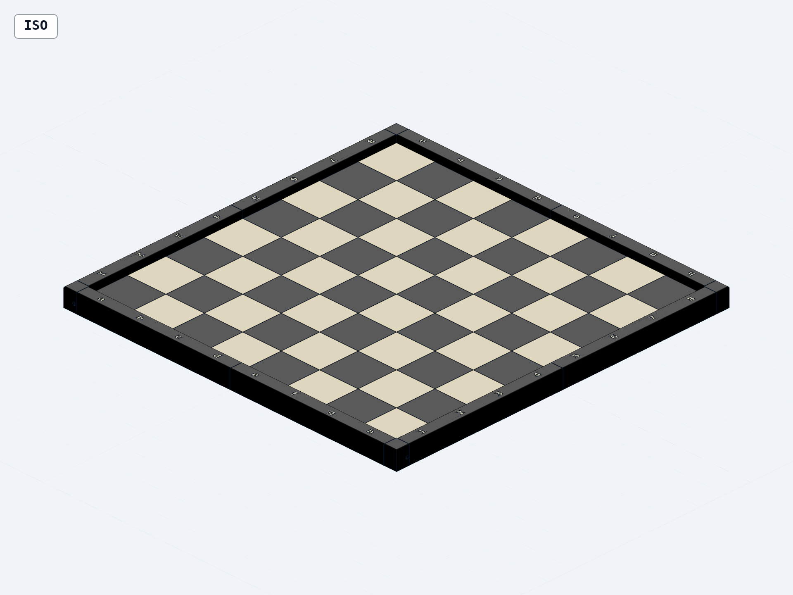
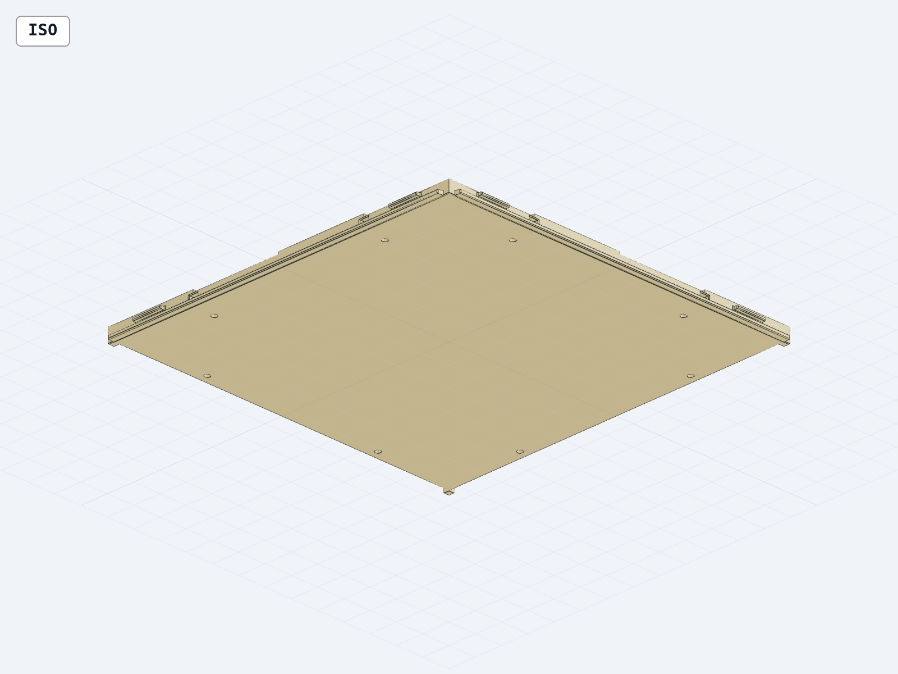
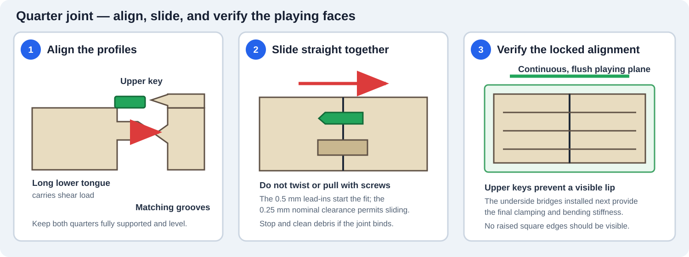
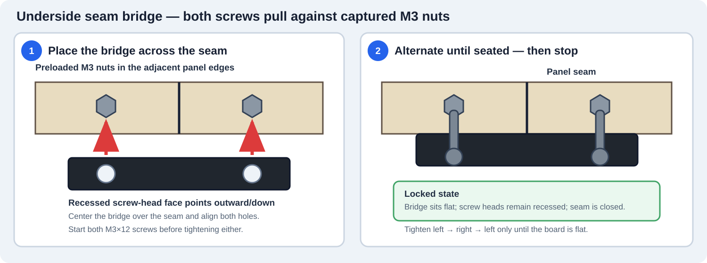
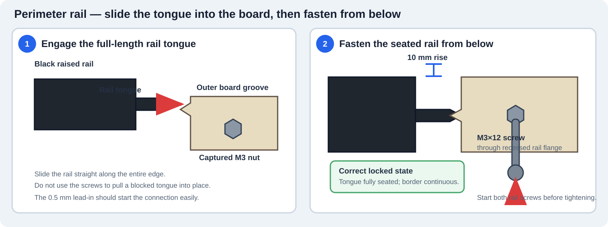
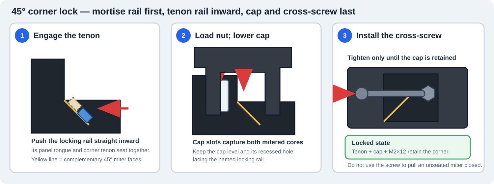
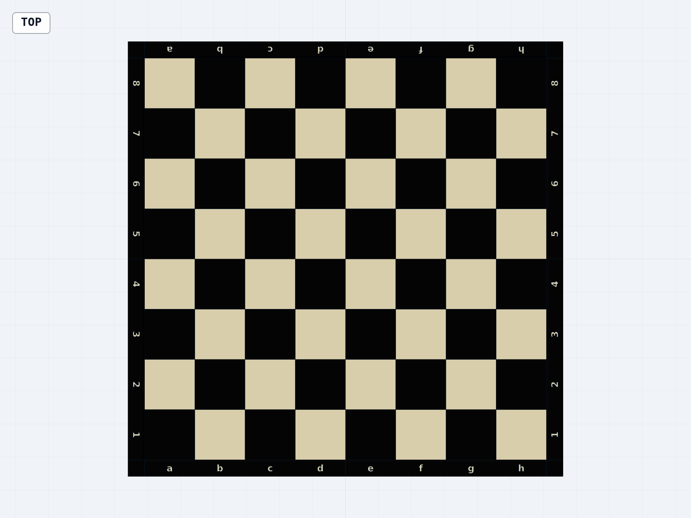

Installation and assembly manual
60 mm Modular Chessboard
Four-quarter, full-size board for the Bambu Lab X2D, with raised perimeter, contrasting algebraic notation, concealed seam registration, and screw-retained corner caps.

60 mmsquare size
480 mmplaying area
520 mmoverall size
10 mmperimeter rise
Read before assembly. Several nuts become inaccessible after adjoining parts are installed. Follow the order in this manual and complete every “load nut first” step before closing a seam or adding a corner cap.
Designed for PLA Matte. Hardware: M3×12 and M2×12 screws with standard hex nuts. No heat-set inserts are required.
Before you begin
Parts, hardware, and preparation
Printed parts
| Part | Qty. |
|---|
| Single-color playing-quarter bodies | 4 |
| Named perimeter rails | 8 |
| Underside seam bridges | 8 |
| Corner caps | 4 |
| Glue-in dark-square inlays | 32 |
| Notation insert set, separate-print route | 1 |
Hardware
| Hardware | Qty. |
|---|
| M3×12 screws | 32 |
| Standard M3 hex nuts | 32 |
| M2×12 screws | 4 |
| Standard M2 hex nuts | 4 |
| Adhesive felt/rubber pads | 12 |
Nominal nuts: M3 = 5.5 mm across flats × 2.4 mm thick; M2 = 4.0 mm across flats × 1.6 mm thick.
Useful tools
- Drivers matching your M3 and M2 screw heads
- Tweezers or needle-nose pliers for nut placement
- Deburring tool, hobby knife, or small flat file
- Protected, flat work surface and soft cloth
- PLA-compatible adhesive for separate inlays
Identify the faces
- Playing side: checker pattern and raised border
- Underside: screw recesses, nut entrances, bridges
- Internal edges: long lower tongue/groove plus short upper keys
- Outer edges: grooves that receive rail tongues

Color parts
Print each playing_surface_body in the chosen light color. Print the 32 dark_square_inlay parts on the two dedicated dark-color plates. Dry-fit every square, then apply a thin, even layer of PLA-compatible adhesive and press it fully into its recess until flush. Keep each rail as one object and assign its inset notation a contrasting filament.
Clean fit surfaces
Remove brim material, strings, and burrs. Preserve the 0.5 mm lead-ins and 0.4 mm first-layer relief. Never force a connector that has visible debris.
Hardware trial: Test one M3 nut and one M2 nut before loading all pockets. A nut should slide into its channel, settle into the hex pocket, and remain unable to rotate.
Stage 1A
Join the four playing quarters

The long lower tongue carries shear; the two short upper keys register the playing faces flush.
- Work face-down. Place all four quarters on a clean, padded, flat surface in their SW, SE, NW, and NE positions.
- Load all M3 nuts before joining. Each quarter has eight side-loading nut entrances—two per edge. Slide one standard M3 nut into every entrance until it seats in the internal hex pocket over the vertical screw passage.
- Join the south row. Slide the southwest quarter’s east tongues and upper keys into the southeast quarter’s west grooves. Keep the faces supported and move the parts straight together.
- Join the north row. Slide northwest into northeast using the same method.
- Join the two rows. Slide the completed north row southward onto the north-facing tongues of the south row. The two short upper keys on each edge register the playing faces while the long lower tongue carries shear load.
- Check the top seam. Sight across the playing face while supporting the full assembly. The quarter faces should be level with no trapped filament or visible step.
Designed clearance: the lower tongue/groove and concealed upper keys use 0.25 mm nominal depth clearance. A smooth sliding fit is expected; a press fit is not.
Do not force the joint. If the quarters stop before the seam closes, separate them and remove brim, stringing, or debris from both profiles.
Stage 1B
Lock the quarter seams from below

Vertical center seam
Install four bridges centered at Y = −180, −60, 60, and 180 mm.
Horizontal center seam
Install four bridges centered at X = −180, −60, 60, and 180 mm.
- Keep the board face-down and fully supported. Confirm the correct M3 nuts were loaded before the seams were closed.
- Place each bridge across its seam with the two recessed screw-head seats facing outward/downward.
- Insert two M3×12 screws through the bridge and into the captured nuts. Turn each screw only a few threads at first.
- Alternate between the two screws until the bridge sits flat. Repeat for all eight bridge locations.
- Sight across the playing side after supporting the full board. Loosen and reseat any bridge associated with a visible seam lip.
How the bridge locks: each screw pulls against a nut captured inside the quarter edge. The bridge spans both panels, clamps the seam closed, and resists bending without any exposed hardware on the playing side.
Stop when seated. Excess preload can bow the 240 mm panels, crush printed layers, or cause long-term PLA creep.
Stage 2
Install the raised perimeter rails
bottom_adbottom_eh
top_adtop_eh
left_14left_58
right_14right_58
White sits at the bottom a–h side. The a1 square must be dark.
Rail positions
| White side | bottom_ad, bottom_eh |
| Opposite side | top_ad, top_eh |
| Left from White | left_14, left_58 |
| Right from White | right_14, right_58 |
Notation check
Letters and numbers should be upright when viewed from their nearby player position. Adjacent rail segments meet under a separate corner cap.
- With the board still face-down, place each rail beside its matching quarter edge.
- Align the rail’s long tongue with the quarter’s outer groove. Start at one end and slide the rail straight into place; keep the screw passages aligned.
- Install two M3×12 screws from the underside of each rail into the previously loaded M3 nuts. Start both screws before tightening.
- Repeat for all eight rails. Leave the four corner caps off until the M2 lock nuts are loaded in the next stage.

Correct fit
The rail tongue seats fully, the 20 mm border is continuous, and the perimeter top remains 10 mm above the playing surface.
If a rail stops early
Remove it, inspect the entrance and tongue, then trim only obvious brim or stringing. Do not draw a misaligned rail home with the screws.
Maximum printed length: each rail is 247.05 mm long. If reprinting, position a 3–4 mm brim carefully inside the X2D’s 256 mm main-nozzle area.
Stage 3
Lock the four corner caps

Load one M2 nut at each corner
| Corner | Rail rib that receives the nut | Cap screw direction |
|---|
| Southwest | bottom_ad | From the nearby outside face |
| Southeast | right_14 | From the nearby outside face |
| Northeast | top_eh | From the nearby outside face |
| Northwest | left_58 | From the nearby outside face |
- Confirm the M2 nut lies flat in the hex pocket and its threaded hole aligns with the horizontal passage through the rail rib.
- Rotate the identical corner cap so its recessed cross-hole faces the selected rib and is accessible from the nearby outside edge.
- Slide the cap down over both ribs. The shallow slot lead-ins help both ribs enter together; keep the cap level.
- Insert one M2×12 screw through the cap wall and rail rib, then thread it into the captured nut.
- Tighten only until the screw head sits in the 4.5 mm diameter × 2.2 mm deep recess and the cap cannot lift.
- Repeat at all four corners.
How the lock works: the M2 nut is captured against rotation in the rail rib. After the cap is installed, the cap roof also prevents the nut from escaping upward. The cross-screw positively prevents the cap from lifting off.
Do not substitute a longer screw without checking. M2×12 is the validated length. A longer screw may bottom out or damage the printed pocket.
Stage 4
Final setup, inspection, and care

Final checklist
All 8 seam bridges installed with 16 M3 screws
All 8 rails installed with 16 M3 screws
All 4 caps locked with M2×12 screws
No screw head protrudes below a recessed seat
Playing-surface seams are flush
a1 is dark and notation is correctly oriented
Rails are fully seated and border joints are even
No loose nuts rattle inside the assembly
- Apply eight felt/rubber pads to the rail recesses and four to the corner-cap recesses.
- With assistance if needed, support the full 520 mm board and turn it playing-side up. Do not lift it by a single rail or corner cap.
- Place it on a flat surface and check for rocking. If needed, verify pad thickness and loosen/reseat a bridge before retightening evenly.
- After the first several uses, check that the screws remain snug. PLA does not benefit from high fastener preload.
Tight connector
Remove the part, clean the entrance, and lightly deburr only the interfering edge. Do not hammer the quarters, rails, or caps together. If consistently tight after reprinting, use small slicer XY-hole/contour compensation.
Visible seam lip
Check for debris in the upper-key grooves, verify the assembly is on a flat surface, and tighten opposing bridge screws gradually. The keys register height; the bridges establish final stiffness.
Cap screw will not start
Remove the cap and confirm it was rotated toward the selected locking rib. Reseat the M2 nut flat in its top-loaded hex pocket and try again without forcing the thread.
Routine care
Clean with a dry or lightly damp cloth. Avoid hot cars, heaters, direct prolonged sun, solvents, and soaking. Store the large panels supported flat to minimize PLA creep.
Design reference: STEP/STL files and the latest validation report are in the project folder. The generated assembly measures 520 × 520 × 27.6 mm and contains 60 mm squares over a 480 × 480 mm playing area.
Assembly complete. Tighten only enough to keep seams closed and the board flat.